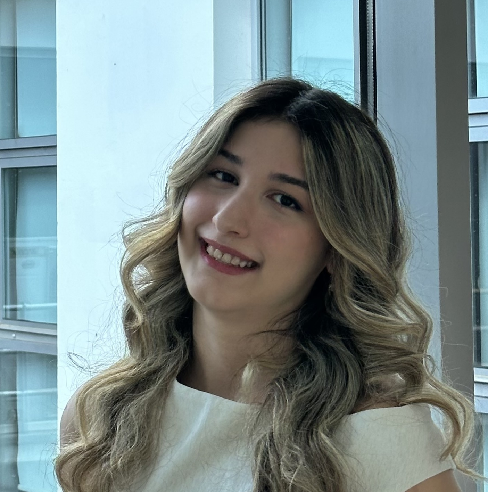

Elif Beray Sarıışık
I am an M.Sc. student in Electrical and Electronics Engineering at Koç University and a graduate researcher at the Wireless Networks Laboratory, fortunate to be advised by Prof. Dr. Sinem Coleri.
My research focuses on robust AI-based resource allocation for wireless networked control systems under imperfect channel-state information.
I received my B.Sc. in Electrical and Electronics Engineering from Bilkent University and studied at Télécom SudParis as an Erasmus+ exchange student.
📡 Research interests
6G wireless communication systems and networks · AI-based wireless networks · Robust optimization · Channel uncertainty modeling · Non-terrestrial networks